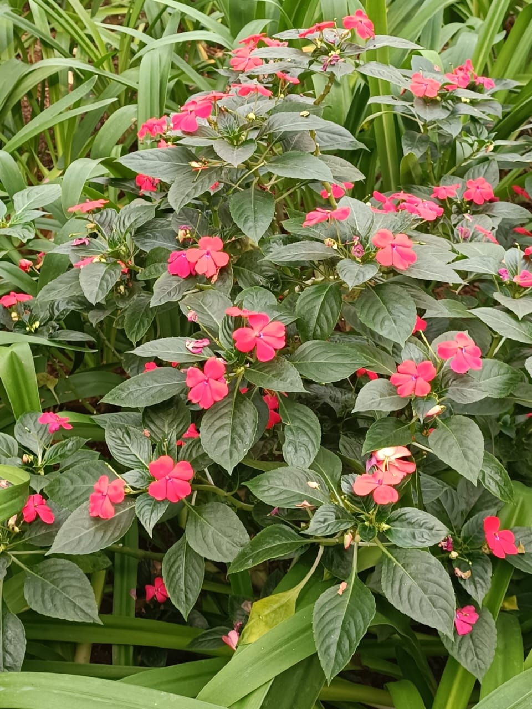

Ciências da Natureza
Esta página apresenta o trabalho desenvolvido em biologia.
O trabalho de Ciências da Natureza consistiu em fotografar cada planta presente no Senac Nações Unidas e classificá-las de acordo com suas características. A atividade envolveu observar as plantas com atenção, identificando suas espécies e características morfológicas, como folhas, flores e frutos. Além disso, foi importante buscar informações sobre cada planta para entender seu habitat e as condições de crescimento, promovendo uma conexão mais profunda com a biodiversidade local. O trabalho também permitiu aplicar conceitos de biologia, como taxonomia e ecologia, de maneira prática.
